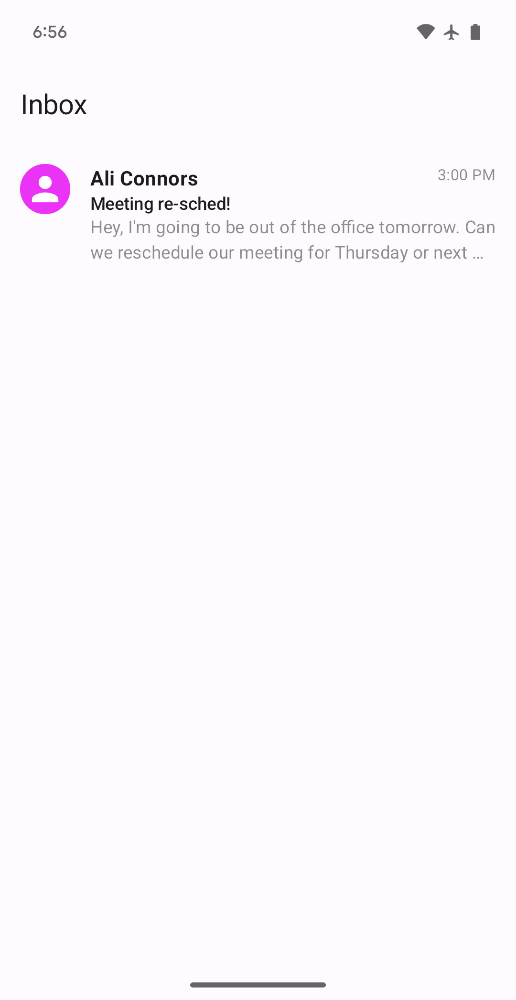
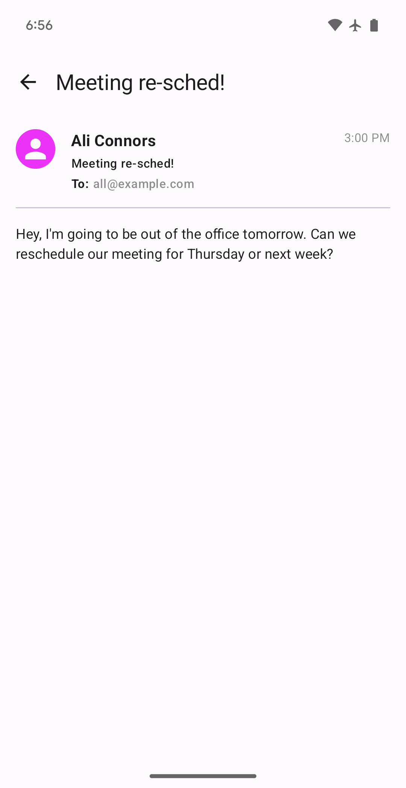

Tutorial¶
This tutorial will help you ramp up to Circuit with a simple email app.
Note this assumes some prior experience with Compose. See these resources for more information:
- (Android) Get started with Jetpack Compose
- (Android) Jetpack Compose Tutorial
- (Multiplatform) Get started with Compose Multiplatform
Setup¶
You can do this tutorial in one of two ways:
1. Build out of the tutorial sample¶
Clone the circuit repo and work out of the :samples:tutorial module. This has all your dependencies set up and ready to go, along with some reusable common code to save you some boilerplate. You can see an implementation of this tutorial there as well.
This can be run on Android or Desktop.
- The Desktop entry point is main.kt. To run the main function, you can run ./gradlew :samples:tutorial:run.
- The Android entry point is MainActivity. Run ./gradlew :samples:tutorial:installDebug to install it on a device or emulator.
2. Start from scratch¶
First, set up Compose in your project. See the following guides for more information:
- Android
- Also set up Parcelize
- Multiplatform
Next, add the circuit-foundation dependency. This includes all the core Circuit artifacts.
dependencies {
implementation("com.slack.circuit:circuit-foundation:<version>")
}
See setup docs for more information.
Create a Screen¶
The primary entry points in Circuit are Screens (docs). These are the navigational building blocks of your app. A Screen is a simple data class or data object that represents a unique location in your app. For example, a Screen could represent an inbox list, an email detail, or a settings screen.
Let’s start with a simple Screen that represents an inbox list:
@Parcelize
data object InboxScreen : Screen
data object InboxScreen : Screen
Tip
Screen is Parcelable on Android. You should use the Parcelize plugin to annotate your screens with @Parcelize.
Design your state¶
Next, let’s define some state for our InboxScreen. Circuit uses unidirectional data flow (UDF) to ensure strong separation between presentation logic and UI. States should be stable or immutable, and directly renderable by your UIs. As such, you should design them to be as simple as possible.
Conventionally, this is written as a nested State class inside your Screen and must extend CircuitUiState (docs).
data object InboxScreen : Screen {
data class State(
val emails: List<Email>
) : CircuitUiState
}
@Immutable
data class Email(
val id: String,
val subject: String,
val body: String,
val sender: String,
val timestamp: String,
val recipients: List<String>,
)
See the states and events guide for more information.
Create your UI¶

Next, let’s define a Ui for our InboxScreen. A Ui is a simple composable function that
takes State and Modifier parameters.
It’s responsible for rendering the state. You should write this like a standard composable. In
this case, we’ll use a LazyColumn to render a list of emails.
@Composable
fun Inbox(state: InboxScreen.State, modifier: Modifier = Modifier) {
Scaffold(modifier = modifier, topBar = { TopAppBar(title = { Text("Inbox") }) }) { innerPadding ->
LazyColumn(modifier = Modifier.padding(innerPadding)) {
items(state.emails) { email ->
EmailItem(email)
}
}
}
}
// Write one or use EmailItem from ui.kt
@Composable
private fun EmailItem(email: Email, modifier: Modifier = Modifier) {
// ...
}
For more complex UIs with dependencies, you can create a class that implements the Ui interface (docs). This is rarely necessary though, and we won’t use this in the tutorial.
class InboxUi(...) : Ui<InboxScreen.State> {
@Composable
override fun Content(state: InboxScreen.State, modifier: Modifier) {
LazyColumn(modifier = modifier) {
items(state.emails) { email ->
EmailItem(email)
}
}
}
}
Implement your presenter¶
Next, let’s define a Presenter (docs) for our InboxScreen. Circuit presenters are responsible for computing and emitting state.
class InboxPresenter : Presenter<InboxScreen.State> {
@Composable
override fun present(): InboxScreen.State {
return InboxScreen.State(
emails = listOf(
Email(
id = "1",
subject = "Meeting re-sched!",
body = "Hey, I'm going to be out of the office tomorrow. Can we reschedule?",
sender = "Ali Connors",
timestamp = "3:00 PM",
recipients = listOf("all@example.com"),
),
// ... more emails
)
)
}
}
This is a trivial implementation that returns a static list of emails. In a real app, you’d likely fetch this data from a repository or other data source. In our tutorial code in the repo, we’ve added a simple EmailRepository that you can use to fetch emails. It exposes a suspending getEmails() function that returns a list of emails.
This is also a good opportunity to see where using compose in our presentation logic shines, as we can use Compose’s advanced state management to make our presenter logic more expressive and easy to understand.
class InboxPresenter(private val emailRepository: EmailRepository) : Presenter<InboxScreen.State> {
@Composable
override fun present(): InboxScreen.State {
val emails by produceState<List<Email>>(initialValue = emptyList()) {
value = emailRepository.getEmails()
}
// Or a flow!
// val emails by emailRepository.getEmailsFlow().collectAsState(initial = emptyList())
return InboxScreen.State(emails)
}
}
Analogous to Ui, you can also define simple/dependency-less presenters as just a top-level function.
@Composable
fun InboxPresenter(): InboxScreen.State {
val emails = ...
return InboxScreen.State(emails)
}
Tip
Generally, Circuit presenters are implemented as classes and Circuit UIs are implemented as top-level functions. You can mix and match as needed for a given use case. Under the hood, Circuit will wrap all top-level functions into a class for you.
Wiring it up¶
Now that we have a Screen, State, Ui, and Presenter, let’s wire them up together. Circuit accomplishes this with the Circuit class (docs), which is responsible for connecting screens to their corresponding presenters and UIs. These are created with a simple builder pattern.
val emailRepository = EmailRepository()
val circuit: Circuit =
Circuit.Builder()
.addPresenter<InboxScreen, InboxScreen.State>(InboxPresenter(emailRepository))
.addUi<InboxScreen, InboxScreen.State> { state, modifier -> Inbox(state, modifier) }
.build()
This instance should usually live on your application’s DI graph.
Note
This is a simple example that uses the addPresenter and addUi functions. In a real app, you’d likely use a Presenter.Factory and Ui.Factory to create your presenters and UIs dynamically.
Once you have this instance, you can plug it into CircuitCompositionLocals (docs) and be on your way. This is usually a one-time setup in your application at its primary entry point.
class MainActivity {
override fun onCreate(savedInstanceState: Bundle?) {
super.onCreate(savedInstanceState)
val circuit = Circuit.Builder()
// ...
.build()
setContent {
CircuitCompositionLocals(circuit) {
// ...
}
}
}
}
fun main() {
val circuit = Circuit.Builder()
// ...
.build()
application {
Window(title = "Inbox", onCloseRequest = ::exitApplication) {
CircuitCompositionLocals(circuit) {
// ...
}
}
}
}
fun main() {
val circuit = Circuit.Builder()
// ...
.build()
onWasmReady {
Window("Inbox") {
CircuitCompositionLocals(circuit) {
// ...
}
}
}
}
CircuitContent¶
CircuitContent (docs) is a simple composable that takes a Screen and renders it.
CircuitCompositionLocals(circuit) {
CircuitContent(InboxScreen)
}
Under the hood, this instantiates the corresponding Presenter and Ui from the local Circuit instance and connects them together. All you need to do is pass in the Screen you want to render!
This is the most basic way to render a Screen. These can be top-level UIs or nested within other UIs. You can even have multiple CircuitContent instances in the same composition.
Adding navigation to our app¶
An app architecture isn’t complete without navigation. Circuit provides a simple navigation API that’s focused around a simple BackStack (docs) that is navigated via a Navigator interface (docs). In most cases, you can use the built-in SaveableBackStack implementation (docs), which is saved and restored in accordance with whatever the platform’s rememberSaveable implementation is.
val backStack = rememberSaveableBackStack(root = InboxScreen)
val navigator = rememberCircuitNavigator(backStack) {
// Do something when the root screen is popped, usually exiting the app
}
Once you have these two components created, you can pass them to an advanced version of CircuitContent that supports navigation called NavigableCircuitContent (docs).
NavigableCircuitContent(navigator = navigator, backStack = backStack)
This composable will automatically manage the backstack and navigation for you, essentially rendering the “top” of the back stack as your navigator navigates it. This also handles transitions between screens (NavDecoration) and fallback behavior with Circuit.Builder.onUnavailableRoute (docs).
Like with Circuit, this is usually a one-time setup in your application at its primary entry point.
val backStack = rememberSaveableBackStack(root = InboxScreen)
val navigator = rememberCircuitNavigator(backStack) {
// Do something when the root screen is popped, usually exiting the app
}
CircuitCompositionLocals(circuit) {
NavigableCircuitContent(navigator = navigator, backStack = backStack)
}
Add a detail screen¶

Now that we have navigation set up, let’s add a detail screen to our app to navigate to.
This screen will show the content of a specific email from the inbox, and in a real app would also show content like the chain history.
First, let’s define a DetailScreen and state.
@Parcelize
data class DetailScreen(val emailId: String) : Screen {
data class State(val email: Email) : CircuitUiState
}
data class DetailScreen(val emailId: String) : Screen {
data class State(val email: Email) : CircuitUiState
}
Notice that this time we use a data class instead of a data object. This is because we want to be able to pass in an emailId to the screen. We’ll use this to fetch the email from our data layer.
Warning
You should keep Screen parameters as simple as possible and derive any additional data you need from your data layer instead.
Next, let’s define a Presenter and UI for this screen.
class DetailPresenter(
private val screen: DetailScreen,
private val emailRepository: EmailRepository
) : Presenter<DetailScreen.State> {
@Composable
override fun present(): DetailScreen.State {
val email = emailRepository.getEmail(screen.emailId)
return DetailScreen.State(email)
}
}
@Composable
fun EmailDetail(state: DetailScreen.State, modifier: Modifier = Modifier) {
// ...
// Write one or use EmailDetailContent from ui.kt
}
Note that we’re injecting the DetailScreen into our Presenter so we can get the email ID. This is where Circuit’s factory pattern comes into play. Let’s define a factory for our DetailPresenter.
class DetailPresenter(...) : Presenter<DetailScreen.State> {
// ...
class Factory(private val emailRepository: EmailRepository) : Presenter.Factory {
override fun create(screen: Screen, navigator: Navigator, context: CircuitContext): Presenter<*>? {
return when (screen) {
is DetailScreen -> return DetailPresenter(screen, emailRepository)
else -> null
}
}
}
}
Here we have access to the screen and dynamically create the presenter we need. It can then pass the screen on to the presenter.
Note: Circuit assumes that the create method will only return presenter instances for screen types it supports. If the screen type isn’t supported, it’s important to return null instead.
We can then wire these detail components to our Circuit instance too.
val circuit: Circuit =
Circuit.Builder()
// ...
.addPresenterFactory(DetailPresenter.Factory(emailRepository))
.addUi<DetailScreen, DetailScreen.State> { state, modifier -> EmailDetail(state, modifier) }
.build()
Navigate to the detail screen¶
Now that we have a detail screen, let’s navigate to it from our inbox list. As you can see in our presenter factory above, Circuit also offers access to a Navigator in this create() call that factories can then pass on to their created presenters.
Let’s add a Navigator property to our presenter and create a factory for our inbox screen now.
class InboxPresenter(
private val navigator: Navigator,
private val emailRepository: EmailRepository
) : Presenter<InboxScreen.State> {
// ...
class Factory(private val emailRepository: EmailRepository) : Presenter.Factory {
override fun create(screen: Screen, navigator: Navigator, context: CircuitContext): Presenter<*>? {
return when (screen) {
InboxScreen -> return InboxPresenter(navigator, emailRepository)
else -> null
}
}
}
}
val circuit: Circuit =
Circuit.Builder()
.addPresenterFactory(InboxPresenter.Factory(emailRepository))
.addUi<InboxScreen, InboxScreen.State> { state, modifier -> Inbox(state, modifier) }
.addPresenterFactory(DetailPresenter.Factory(emailRepository))
.addUi<DetailScreen, DetailScreen.State> { state, modifier -> EmailDetail(state, modifier) }
.build()
Now that we have a Navigator in our inbox presenter, we can use it to navigate to the detail screen. First, we need to explore how events work in Circuit.
Events¶
So far, we’ve covered state. State is produced by the presenter and consumed by the UI. That’s only half of the UDF picture though! Events are the inverse: they’re produced by the UI and consumed by the presenter. Events are how you can trigger actions in your app, such as navigation. This completes the circuit.
Events in Circuit are a little unconventional in that Circuit doesn’t provide structured APIs for pipelining events from the UI to presenters. Instead, we use an event sink property pattern, where states contain a trailing eventSink function that receives events emitted from the UI.
This provides many benefits, see the events guide for more information.
Let’s add an event to our inbox screen for when the user clicks on an email.
Events must implement CircuitUiEvent (docs) and are usually modeled as a sealed interface hierarchy, where each subtype is a different event type.
data object InboxScreen : Screen {
data class State(
val emails: List<Email>,
val eventSink: (Event) -> Unit
) : CircuitUiState
sealed class Event : CircuitUiEvent {
data class EmailClicked(val emailId: String) : Event()
}
}
Now that we have an event, let’s emit it from our UI.
@Composable
fun Inbox(state: InboxScreen.State, modifier: Modifier = Modifier) {
Scaffold(modifier = modifier, topBar = { TopAppBar(title = { Text("Inbox") }) }) { innerPadding ->
LazyColumn(modifier = Modifier.padding(innerPadding)) {
items(state.emails) { email ->
EmailItem(
email = email,
onClick = { state.eventSink(InboxScreen.Event.EmailClicked(email.id)) },
)
}
}
}
}
// Write one or use EmailItem from ui.kt
private fun EmailItem(email: Email, modifier: Modifier = Modifier, onClick: () -> Unit) {
// ...
}
Finally, let’s handle this event in our presenter.
class InboxPresenter(
private val navigator: Navigator,
private val emailRepository: EmailRepository
) : Presenter<InboxScreen.State> {
@Composable
override fun present(): InboxScreen.State {
// ...
return InboxScreen.State(emails) { event ->
when (event) {
// Navigate to the detail screen when an email is clicked
is EmailClicked -> navigator.goTo(DetailScreen(event.emailId))
}
}
}
}
This demonstrates how we can navigate forward in our app and pass data with it. Let’s see how we can navigate back.
Navigating back¶
Naturally, navigation can’t be just one way. The opposite of Navigator.goTo() is Navigator.pop(), which pops the back stack back to the previous screen. To use this, let’s add a back button to our detail screen and wire it up to a Navigator.
data class DetailScreen(val emailId: String) : Screen {
data class State(
val email: Email,
val eventSink: (Event) -> Unit
) : CircuitUiState
sealed class Event : CircuitUiEvent {
data object BackClicked : Event()
}
}
@Composable
fun EmailDetail(state: DetailScreen.State, modifier: Modifier = Modifier) {
Scaffold(
modifier = modifier,
topBar = {
TopAppBar(
title = { Text(state.email.subject) },
navigationIcon = {
IconButton(onClick = { state.eventSink(DetailScreen.Event.BackClicked) }) {
Icon(Icons.Default.ArrowBack, contentDescription = "Back")
}
},
)
},
) { innerPadding ->
// Remaining detail UI...
}
}
class DetailPresenter(
private val screen: DetailScreen,
private val navigator: Navigator,
private val emailRepository: EmailRepository,
) : Presenter<DetailScreen.State> {
@Composable
override fun present(): DetailScreen.State {
// ...
return DetailScreen.State(email) { event ->
when (event) {
DetailScreen.Event.BackClicked -> navigator.pop()
}
}
}
// ...
}
On Android, NavigableCircuitContent automatically hooks into BackHandler to automatically pop on system back presses. On Desktop, it’s recommended to wire the ESC key.
Conclusion¶
This is just a brief introduction to Circuit. For more information see various docs on the site, samples in the repo, the API reference, and check out other Circuit tools like circuit-retained, CircuitX, factory code gen, overlays, navigation with results, testing, multiplatform, and more.